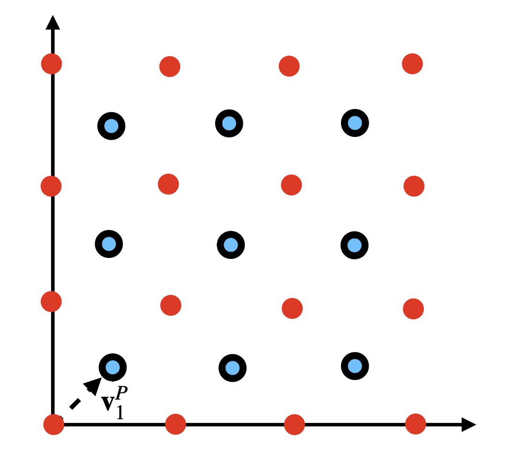

Lattices
Lattices are represented by interleaved Cartesian grids. This is general enough for any integer lattice (and a non-Integer lattice can be handled with a diagonal scale, however this is an abstraction the user must provide). You create a Lattice in a few different ways, for examples, we can make a Quincunx lattice via
Creating Lattice Tensor Factories
from ncdl.lattice import Lattice
qc = Lattice("quincunx")
Typically, it’s easiest to specify it as a shorthand string. You can also explicitly give the coset structure.
from ncdl.lattice import Lattice
import numpy as np
qc = Lattice([
np.array([0, 0], dtype='int'), # The trivial shift
np.array([1, 1], dtype='int'), # (1,1) shift
], np.array([2, 2], dtype='int')) # Diagonal scale.
Which is, perhaps, a little less elegant. I’d like to make this more user friendly, and registering new lattices is on the roadmap (it’s a very basic feature).
The code above created a factory for quincunx lattice tensor, seen below
{kind=link}
Lattice Class
|
The general "LatticeTensor" factory. |
Lattice Methods
Lattice Properties
The dimension of the lattice. |